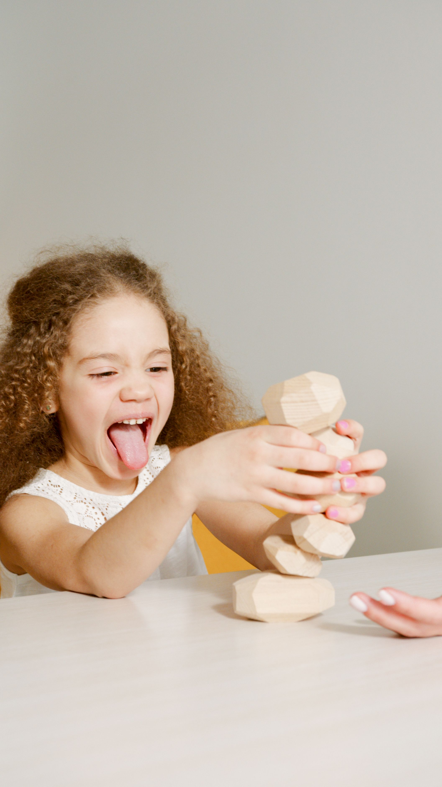
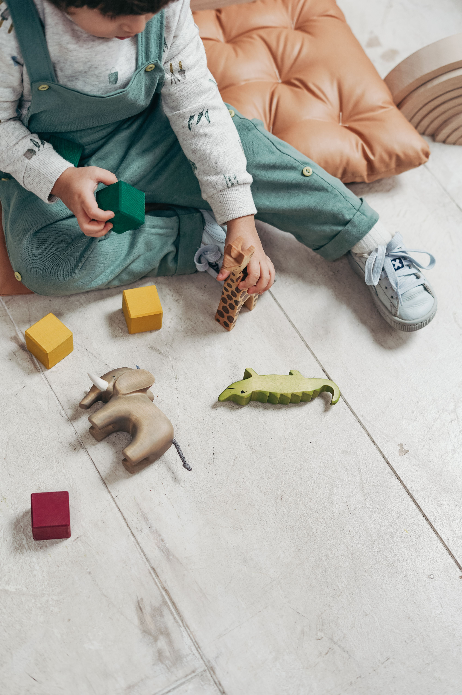
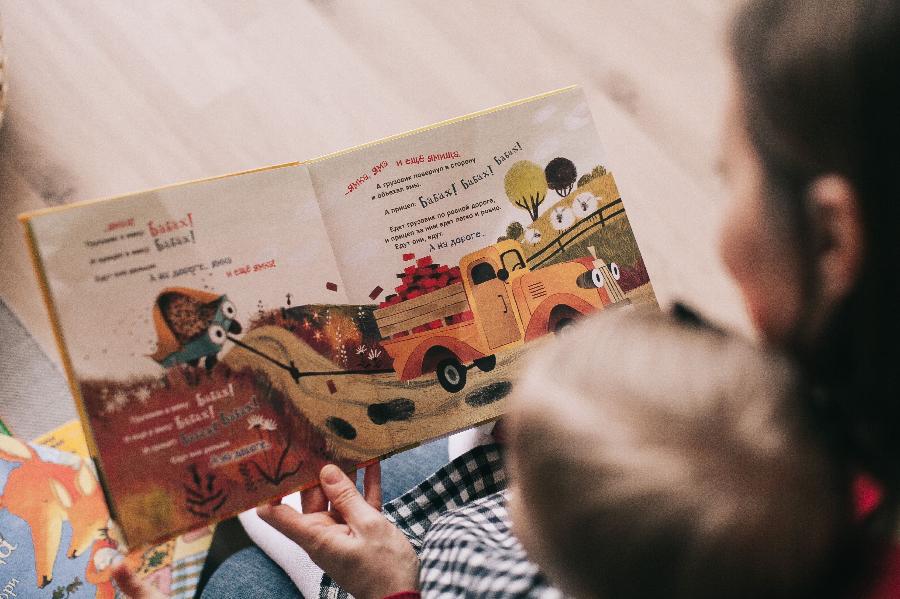

İşitme ve Dil Atölyesi; çocukların ve ailelerin işitme, dil ve iletişim yolculuğunda ihtiyaç duyabilecekleri bilgileri, kaynakları ve rehberliği bir araya getiren bir alan.
Eğitim & Seminerler →Her işitme yolculuğunun kendine özgü bir başlangıcı vardır. Bir soruyla, bir ihtiyaçla ya da sadece merakla başlayan bu yolculuk; işitmeden anlamaya, öğrenmeden iletişime uzanır.
Çocuğunuzun dil, konuşma ve iletişim gelişimiyle ilgili merak ettiklerinizi keşfedebilirsiniz.
Çocuğunuzun işitme ve dil gelişimini, dinleme becerilerini ve işitme kaybına yönelik çözüm seçeneklerini ve işitsel re/habilitasyonu keşfedebilirsiniz.
Çocuğunuzun dikkat, öğrenme ve çalışma belleğini desteklemek ve beynin öğrenme sürecini daha iyi anlamak için keşfedebilirsiniz.
Beynin gelişimini, öğrenme süreçlerini ve çocukların gelişim yolculuğunu daha yakından keşfedebilirsiniz.



Değerlendirmeden ameliyat sonrasına kadar sürecin genel hatları.
Bu yazının kısa bir girişi buraya gelecek.
Bu yazının kısa bir girişi buraya gelecek.
"Bu yazı sayesinde sürecin ne olduğunu çok daha net anladım, teşekkürler."
"Ailemle birlikte okuduk, çok faydalı ve anlaşılır bir anlatım."
"Aradığım bilgiyi burada, güvenilir bir kaynaktan bulabildim."